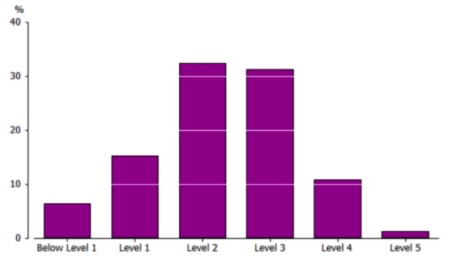
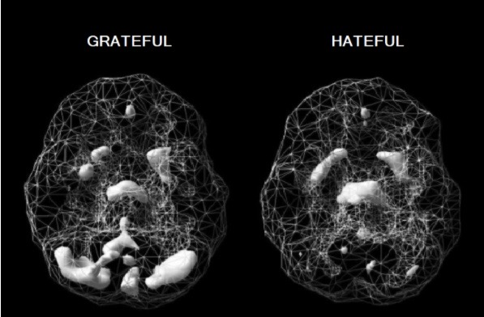
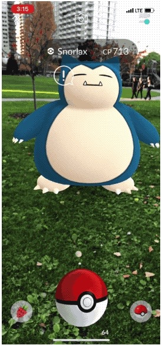
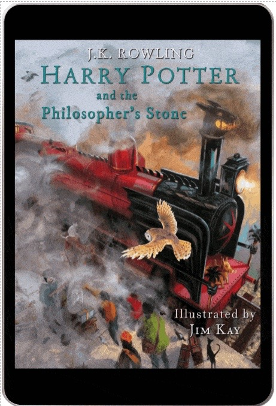
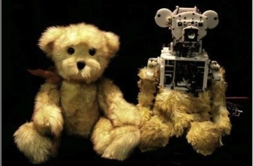

Project Idea - Mobius Maths Education
Overview
The format and delivery of education has remained largely unchanged for the last 100 years. Mobius Education (named after the surface with only one side, pictured above) transforms the subject of mathematics into a journey of wonder, fun and exhilaration. It's maths education for the 21st century child using the latest technologies including AI, machine learning, virtual reality, augmented reality, gaming, animation and HD video including animated eBooks. The student (player) is transported from their classroom into worlds where they see how maths really works. No more tedious, boring classrooms where teachers talk for hours and scribble on a blackboard. At Mobius, children learn maths in an interactive and natural manner, making them fall in love with the beauty of formulas and calculations. By the end of the course, students will achieve a high level of mathematical fluency and be able to flourish in an ever evolving world.
Motivation
Maths fluency is low
Maths is a language, like English, but even employed people have problems understanding and speaking it. According to data from ‘Programme for the International Assessment of Adult Competencies (PIAAC),’ employed people aged 15 to 64 years who worked in 'Professional, Scientific and Technical Services' had numeracy skills that were high (70% at Level 3 or above), but those working in Construction, Administration and Manufacturing were low (44%, 39% and 42% at Level 3 or above respectively). Numeracy levels among the general Australian population (both employed and unemployed), were low. Close to 6.5% (1.1 million) of Australians had numeracy skills at Below Level 1, 15% (2.5 million) at Level 1, 32% (5.4 million) at Level 2, 31% (5.2 million) at Level 3, 11% (1.8 million) at Level 4 and 1.4% (230,000) at Level 5.2  Figure 3. Proportion of Australians at each numeracy level(2011-12).
Costs of innumeracy
Mathematics has allowed society to advance to a point where the average lifespan of a child born in 2000 is 100 years old.3 Without mathematical skills, engineering and science will not progress, leading to stagnation and serious consequences to our species in the event of a global pandemic or natural disaster such as a volcanic eruption or asteroid collision. Today there is growing shortage of qualified people in the STEM fields. Much of this has to do this a lack of mathematical knowledge.
The inability to rationally understand statistics, large numbers, graphs and probabilities has also resulted in a population that can be easily manipulated and misinformed in areas of great importance - governmental policies, personal life decisions, medicine and finance. Pseudoscience and conspiracy theories are rising and the recent Covid-19 pandemic has highlighted this well. It is more crucial than now than ever to possess a clear, logical way of looking at the world. It is literally a life or death situation at the moment. Lastly, mathematically competent people tend to be wealthier. People with higher scores in numeracy make more money from wages and salaries. In the PIAAC study, 89% of Australian high-income earners had a numeracy level of 3 or higher, compared to only of 29% of low-income earners.
Motivation
THE DESIGNER COURSE: Neuroimaging and Psychometric tests
Mobius Maths is a custom designed course for Prep to University students using the latest technologies with lifetime access. To personalise maths education, each child firstly undergoes a single photon emission computed tomography (SPECT) scan to see how blood flows to their brain. We check for any abnormalities and problems every year and enter the data into a brain bank, which a student can access on our online platform. A healthy, well-functioning brain is the foundation of education and a happy life. When the brain is troubled, a child will struggle to be their best selves. Based on the results, the child will be given an AI designed brain diet including supplements (Omega 3 fatty acids, multi-vitamins, etc) and an exercise regime to maximise mental performance. The food that we eat and the amount of exercise we do has a profound effect on how our brain functions.
 Figure 2. SPECT scan of a healthy brain
Figure 2. SPECT scan of a healthy brain
Afterwards, the child takes a psychometric test, beginning in Prep and every 6 months afterwards until they finish the course. The results will be part of a training data set for AI to learn from. Algorithms will generate a personalised course suited to the child’s character, personal interest and learning style. As the student changes and grows, so too does the course, creating a flexible and ever evolving learning environment. She can learn and progress through the course at her own speed. Learning is not a race. Having a deep understanding of maths is the priority at Mobius.
A PERFECT TEACHER:
An AI digital assistant
Far too many students sit in a classroom, surrounded by thirty other students, receiving little to no attention from their teacher. At Mobius Education, each child has their own intelligent virtual teacher called MoBi, who guides them through their course until they complete it (with a 100% pass rate per level so there are no learning gaps and the student grasps advanced topics with ease). Mobi ensures the child never feels alone or disorientated. MoBi is like Siri, an intelligent assistant from Apple Inc.1 He has a natural-language user interface.
MoBi, however, is also equipped with latest data in psychology, biology, neuroscience and of course mathematics (by ingesting all the research papers and books available), as well as the child's input data given during each psychometric test. Not only will he be able to organise his students maths course and keep track of her progress, he'll be able to hold an intelligent, meaningful and emotionally rich two-way conversation with her.
He'll be able to adjust and morph into any character (a warrior, an alien, a character from a favourite book, or even a talking car like Kitt7) to better understand and connect with his student. MoBi will even be able to take physical form using our other products (our computerised teddy bear for example). As the child's personality and learning style changes, so too will MoBi. He will synchronise and align conversations with the interests of the maturing child. MoBi is not only the student's guide, but also her friend. He will boost her self-esteem, confidence and learning ability, ensuring she excels not only in maths, but in life. MoBi will be the child's confidant during the learning journey. This personal touch is often missing in today's education.
IT'S PLAY TIME: Games, Cartoons, ebooks, VR, AR, Collector Cards, Comics, Movies, T.V Shows and Toys
At Mobius Maths, we take fun seriously. Education is a positive, playful and entertaining experience. Obtaining knowledge is about understanding and appreciating the world, being curious and solving problems. When we are children, we learn to speak a language so we can communicate and express our feelings to our family. It was an easy, immersive and interactive experience. We didn't even realise we were learning such a complex subject with its own grammar and syntax. Maths needs to be taught in a similar manner. However, the current school system concentrates on rote memorisation and competition, two things that create anxiety and hatred towards the subject. Negative thinking decreases blood flow to the brain, making it harder to learn and gain deep understanding.
At Mobius, creativity and enjoyment is at the core of our learning experience. Today, the most common tool for complex maths visualization in the classroom is the TI-84+ calculator. That's why at Mobius we've developed a blended learning model that captures a child's attention and helps them visualise maths, the key to truly understanding it. The maths skills they gain are applicable to the real world.
Games: traditional. augmented reality and virtual reality
Our gaming platform simulates different experiences for each grade level. We incorporate traditional gaming styles, as well as the latest in virtual and augmented reality. As an industry, video games generated $US119.6 billion in revenue during 2018, and the demand for thrilling games is only increasing.24 The ever popular Pokemon Go has 60 million active users per month.6 At Mobius, we have thousands of high quality simulations to choose from, and all are easily manipulated to suit an individual student, i.e. AI designs the game with the child.
Maths games aren't simply about doing equations. Each product explores a different part of our world. It's hands on and practical. For example, children interested in space technology can help build a space rocket at NASA (like in the Kerbal Space Program12) then learn calculus and trigonometry. A child excited by war games can help orchestrate an army to destroy an enemy, then learn about statistics and probability. The child's imagination is the only limit.
Ebooks, Comics and Collector Cards: Augmented Reality, Animated and Self-talking:
No more lugging around heavy textbooks. At Mobius, each child has their own digital library for a lifetime. Books are an important part of the learning experience. Creative stories are how we communicate to the world and convey information. Taking a lesson from Harry Potter, one of the world's best-selling children's book series with over 400 million copies sold, we at Mobius have created a line of entertaining children's books with characters that move, speak and even jump out of the book (via augmented reality). Auto-reading features allows the student to follow along at whatever speed they find comfortable, while a natural sounding voice reads to them.
We also have a range of mathematical collector cards (digital and paper) that are illustrated, animated and use AR technology. Inspired by the Pokémon Collector Cards, the Mobius Collector Cards feature a range of cute Anime characters for young children and beautiful illustrations for older students.
Movies and Series: Documentaries, T.V. Shows and Cartoon Series:
People are spending more time streaming video content. Entertaining cartoons are an effective learning tool for teaching maths to young children and adults alike. Colourful animations mixed with funny, novel and emotionally charged storylines increases memory retention.14 At Mobius, we have an exciting range of cartoons to suit every taste, including Pixar-styled animations with 3D rendering. For older students, we have a range of maths documentaries that rival PBS and Discovery Channel. They educate the student on everything from Sir Isaac Newton's discovery of Calculus to Maxwell's equations for electricity. All topics are covered and easily accessed on our website or other streaming platforms including Netflix, Amazon, YouTube and Facebook.
Toys: Electronics, Robotics and 3D-Printing
Mobius Education incorporates toys and the 'Internet of Things' into learning such as our talking teddy bear, robot, warrior, car, jewellery, watch, jumper etc. It enables MoBi to take a 3D physical form in the real world and interact with the child through touch. For example, through the teddy bear, MoBi can give the child a hug. The child can now take MoBi anywhere there is wireless internet connection, so learning doesn't have to stop at the desk, but can move anywhere the child wants to go. We also have a range of 3D printed mathematical toys to further help a child visualise mathematics, ranging from simple blocks and triangles to knot theory, regular polyhedra and four-dimensional spaces
Tools, technologies and skills
Integrating all these applications onto one user-friendly online platform requires a lot of technologies to work seamlessly. To create these products, computers that have Windows, Mac or Linux installed with high-speed internet access (4G or 5G) are needed.
MoBi the Virtual Teacher
The virtual teacher works primarily on five technologies; Machine Learning, Computer Vision, Speech Recognition, Natural Language Processing (NLP) and Deep Learning. IBM Watson can be trained using large datasets from the students as well as research on psychology, biology, mathematics and neuroscience.
Process: A prototype of MoBi can be built (for free) using IBM Watson Assistant services. Here, an AI conversational agent, i.e. a chatbot, can be created. Using IBM Watson Speech to Text and Text to Speech services, the chatbot can talk with the user via text or voice commands in a natural language conversation. It can be trained to learn and evolve through user feedback and linked to Watson Discovery (unstructured data analysis service). Watson Assistant and Discovery services are hosted on the IBM Cloud platform.
Skills Required
An understanding of Python, HTML5, CSS3, JavaScript, jQuery, Bootstrap, Express.js, React.js, Node.js, Database Theory, MongoDB, MySQL, C++, C#, Kotlin, Swift, Rest APIs, Command Line, Bash, Apache and Git. Links: Jupyter Notebook: Jupyter.Note and Brackets: Brackets.Edit
Ebooks, Comics, Collector Cards, Cartoon, Videos and Games
Illustration/Animation: Creating colourful digital art and animation requires Adobe Illustrator, Photoshop, Animate and Character Animator. Open source animation software options include Blender (for 3D rendering) and Inkscape. A Wacom Cintiq pen display can be used create digital drawings.